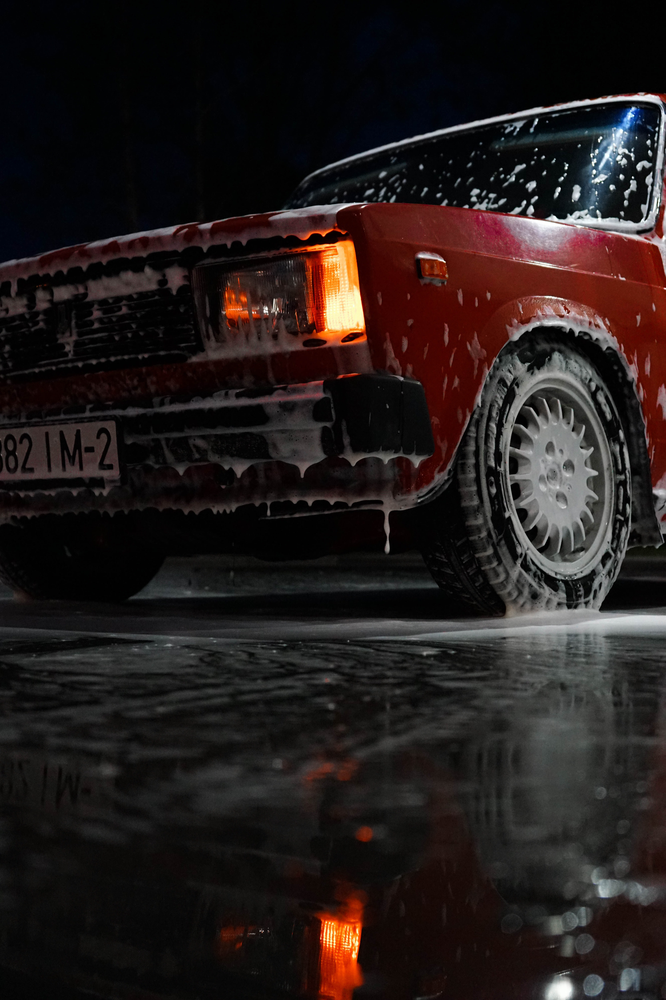
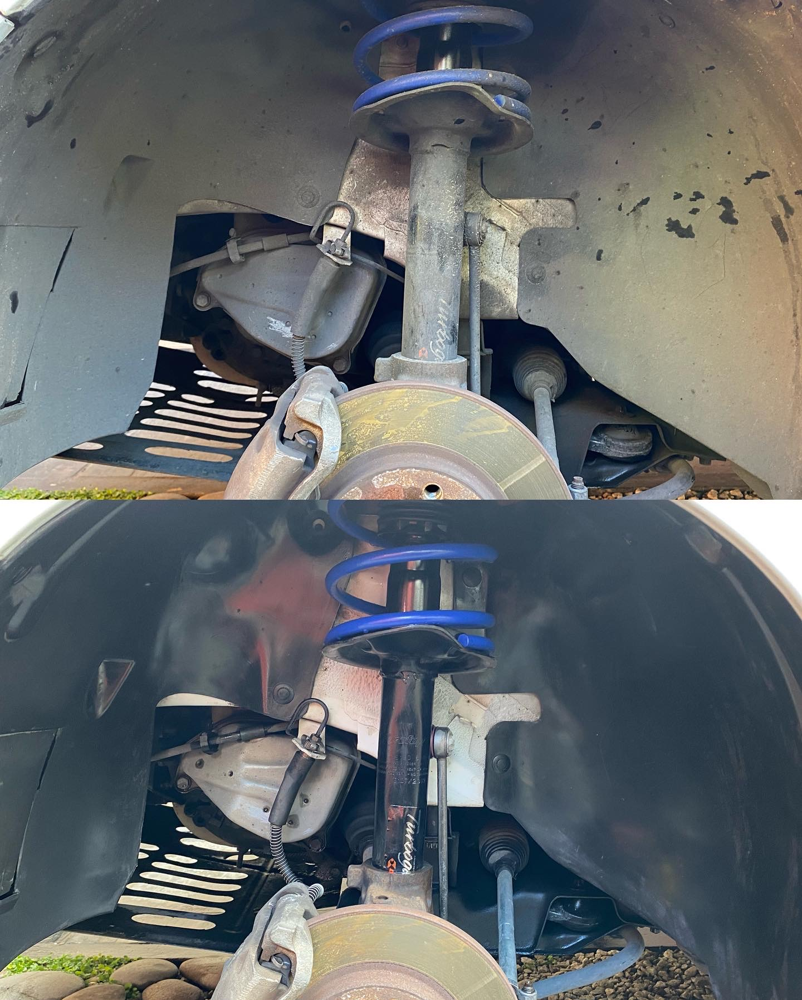

Lavado a detalle
Lavado a detalle
Lavado completo del vehiculo utilizando productos de alta calidad para asi garantizar un acabo optimo. Incluye aspirado y limpieza de plasticos en el interior.
$2500

Amortiguadores y pasaruedas
Amortiguadores y pasaruedas
Limpieza a fondo de amortiguadores y pasaruedas eliminando toda tierra que se encuentre adherida y adicion de productos para prolongar su condicion.
$3000 | Lavado + Amortiguadores y pasaruedas $5000